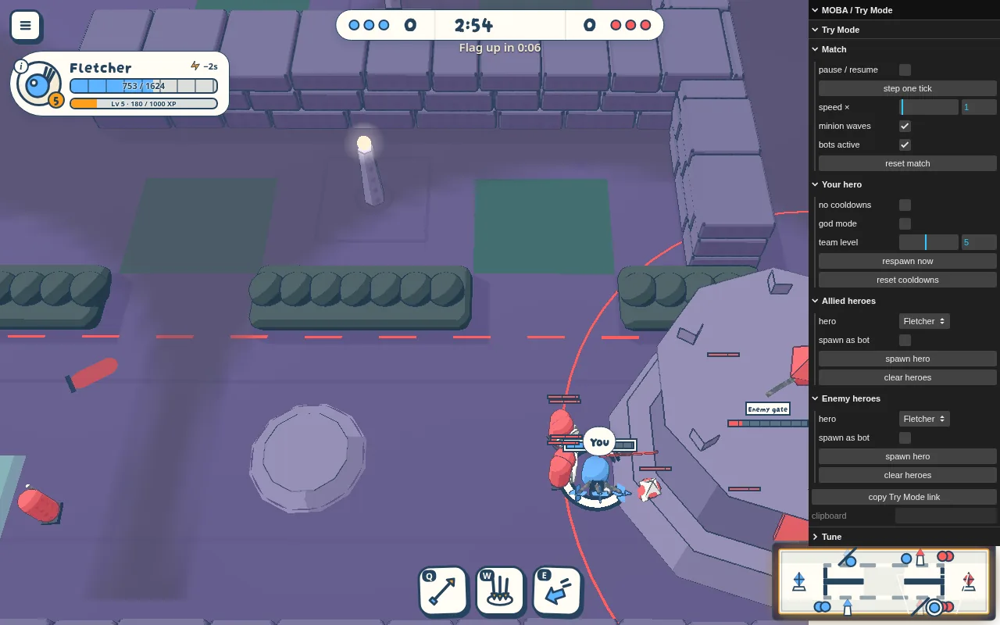

Flagfall gates
Decided · 2026-10-10 · thr_88z9qrycxv
The gate is a placeholder stone drum spanning the lane. Is a drum fine for now, or should it read as a wall?

Decided · 2026-10-10 · thr_88z9qrycxv
The gate is a placeholder stone drum spanning the lane. Is a drum fine for now, or should it read as a wall?
